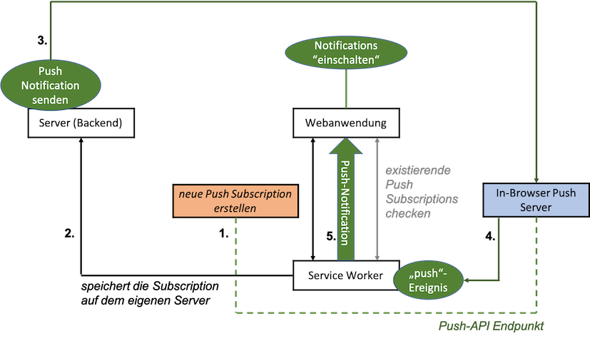

Push Notifications¶
Push Notifications sind sinnvoll, um die Nutzerin einer App über Neuigkeiten zu informieren, sogar dann, wenn die Anwendung (und der Browser!) geschlossen ist (sind). Mit Push Notifications können Nutzerinnen wieder "zurück an die App geholt" werden, d.h. mithilfe von Push Notifications kann man dafür sorgen, dass Nutzerinnen die App wieder öffnen, um sich die Neuigkeiten genauer anzuschauen. Die Neuigkeiten können neue Tweets, E-Mails, Nachrichten, Anrufe usw. sein.
Das Prinzip, das für die Push-Benachrichtungen umgesetzt wird, sieht auf den ersten Blick etwas kompliziert aus:

Im Zentrum stehen zunächst die Webanwendung und der Service Worker. Die Webanwendung meldet sich bei den Push-Benachrichtigungen an und der Service Worker verwaltet diese. Jeder Browser hat eine eigenen "eingebauten" Push Server. Eine Push-Anmeldung (Push Subscription) erlaubt den Zugriff auf einen Push-API-Endpunkt auf den Push-Server. Die eigentliche Push-Benachrichtigung kommt jedoch vom eigenen Server. Er sendet die Push-Nachricht an den In-Browser Push Server, dieser löst damit ein push-Ereignis beim Service Worker aus und der Service Worker schickt die Push-Benachrichtigung an die Webanwendung.
Wir schauen uns alle diese Schritte im Detail an. Ausgangspunkt ist das Projekt in diesem Stand.
Anzeigen von Benachrichtigungen¶
Wir beginnen mit dem Anzeigen (der Darstellung) von Push-Benachrichtigungen in einer Webanwendung. Dieser Abschnitt hat noch nichts mit dem push-Ereignis zu tun! Wir benötigen zum Anzeigen nicht mal einen Service Worker. Es geht aber auch über den Service Worker - und das wird später auch bei der Verwendung der Push-API notwendig. Die hier verwendete Notification-API wird von fast allen Browsern unterstützt. Hier ist auch eine gute Übersicht darüber, wie diese Notification-API verwendet wird.
Benachrichtigungen einschalten¶
Bevor wir das Anzeigen von (Push-)Benachrichtigungen betrachten, müssen wir diese zuerst erlauben. In unserer Anwendung gibt es dazu den Button BENACHRICHTIGUNGEN EIN.

In der index.html ist dieser Button zwei Mal definiert, einmal für einen schmalen Viewport und einmal für einen breiten. Für beide Varianten sieht die Implementierung so aus:
<div class="drawer-option">
<button class="enable-notifications mdl-button mdl-js-button mdl-button--raised mdl-button--colored mdl-color--accent">
Benachrichtigungen Ein
</button>
</div>
Für einen schmalen Viewport ist der Button dann unter dem Hamburger Menü in der linken oberen Ecke erreichbar. Beiden Buttons ist die CSS-Klasse enable-notifications zugewiesen. Wir sorgen zuerst dafür, dass dieser Button nur angezeigt wird, wenn der Browser die Notification-API unterstützt. Wenn nicht, dann wäre der Button funktionslos und wir bräuchten ihn nicht. Wir schalten ihn deshalb in der app.css zunächst im Standartwert aus:
1 2 3 4 5 6 7 8 9 10 11 | |
In der app.js prüfen wir, ob der Browser die Notification-API unterstützt und schalten für diesen Fall die Buttons wieder ein.
1 2 3 4 5 6 7 8 9 10 11 12 13 14 15 16 17 18 19 20 21 22 23 24 25 26 27 28 29 30 | |
- In Zeile
1erstellen wir uns eine VariableenableNotificationsButtons, die auf ein Array aller Buttons mit der CSS-Klasseenable-notificationszeigt. - In Zeile
25prüfen wir nun, ob der Browser dieNotification-API unterstützt. Wenn ja, dann schalten wir alle Buttons aus demenableNotificationsButtons-Array wieder auf sichtbar (vondisplay: noneaufdisplay: inline-block) und wir melden jeden dieser Buttons an die Ereignisbehandlung desclick-Ereignisses an (Zeile28). - Die Behandlung des
click-Ereignisses erfolgt in der MethodeaskForNotificationPermission(), die in den Zeilen14-23definiert ist. Da diese Methode nur dann aufgerufen wird, wenn der Browser dieNotification-API unterstützt, kann diese API darin verwendet werden. - Mit der Funktion requestPermission() wird die Nutzerin gefragt, ob sie Benachrichtigungen zulassen möchte. Diese Methode gibt ein Promise zurück, dessen
resultdie Wertegranted,deniedoderdefaulthaben kann. Werden Benachrichtigungen nicht erlaubt (Zeile17), können wir nichts weiter tun. Die Nutzerin wird dann auch nicht erneut gefragt. Die Benachrichtigungen bleiben für die Webanwendung ausgeschaltet (Zeile18).
Wenn wir die Anwendung nun ausführen (Reload nach Application --> Storage --> Clear Storage oder die Versionsnummern der Caches im Service Worker ändern), dann erhalten wir nach dem Klicken auf den BENACHRICHTIGUNGEN EIN-Button folgende Abfrage:

Wenn wir auf Zulassen klicken, dann erscheint in der Konsole User Chaice granted (Zeile 16). Beachten Sie, dass Sie nicht erneut gefragt werden, ob Benachrichtungen zugelassen werden sollen oder nicht. Erneutes Klicken auf den Button bewirkt (selbst nach einem Reload der Anwendung) keine erneute Abfrage. Deshalb wäre es eigentlich auch sinnvoll, den Button wieder zu verstecken, d.h. auf display: none zu setzen.
Benachrichtigungen anzeigen¶
Jetzt erstellen wir unsere erste Benachrichtigung mithilfe der Notification-API. Die einfachtse Form der Notification wird durch die Verwendung des parametrisierten Konstruktors von Notification (new Notification('Nachricht')) erstellt. Wir fügen die app.js eine solche einfache Benachrichtigung für den Fall, dass Benachrichtigungen erlaubt werden, ein:
1 2 3 4 5 6 7 8 9 10 11 12 13 14 15 16 17 18 19 20 21 22 23 24 25 26 27 28 29 30 31 32 33 34 | |
Wenn wir die Anwendung nun erneut ausführen und auf den Button klicken, dann werden wir zwar nicht erneut gefragt, ob wir Benachrichtigungen zulassen oder blockieren wollen, aber da wir Benachrichtungen bereits zugelassen haben, erscheint nun die folgende Benachrichtigung:

Der einfache Aufruf des Notification-Konstruktors mit einer einfachen Nachricht (Zeile 15) erzeugt auch die einfachste Form der Benachrichtigung. Dem Konstruktor lassen sich aber als zweiten Parameter noch JavaScript-Objekt für options übergeben. Darin kann ein weiterer Text (body) definiert werden und z.B. auch ein eigenes icon. Wir betrachten das später noch etwas genauer, erstmal nur eine weitere Nachricht:
14 15 16 17 | |
ergibt dann die Benachrichtigung:

Benachrichtigungen im Service Worker erstellen¶
Im jetzigen Stand werden die Benachrichtungen aus der Webanwendung heraus erstellt. Das ist auch völlig ok. Die Notification-API lässt sich sowohl in der Webanwendung verwenden, als auch im Service Worker. Da später aber die Push-Benachrichtigungen vom Service Worker verwaltet werden, wechseln wir jetzt auch für die einfachen Benachrichtigungen zum Service Worker, d.h. wir lassen die Benachrichtigungen nun nicht mehr durch die Webanwendung erstellen, sondern durch den Service Worker. Dazu passen wir unsere app.js wie folgt an:
14 15 16 17 18 19 20 21 22 23 | |
Der Service Worker besitzt eine eigene Funktion showNotification(), die intern ein Notification-Objekt erzeugt und der die gleiche Parameterliste übergeben werden kann, wie dem Notification-Konstruktor.